11.1 ADEQUAÇÃO DA LINGUAGEM
Na produção editorial do Incaper, lidamos com uma audiência diversificada composta de especialistas técnicos, pesquisadores, extensionistas, agricultores e suas organizações de representação, demais agentes que atuam no segmento rural, estudantes, entre outros. Em um contexto tão amplo e diverso, não só a clareza e a transparência, mas, sobretudo, a adequação da linguagem se tornam fundamentais para garantir a eficácia da informação.
Facilitar a compreensão implica adequar tanto a linguagem quanto a estruturação do texto. No entanto, isso não significa empobrecê-lo, excluir informações relevantes ou utilizar linguagem coloquial. Na realidade, a norma-padrão continua sendo o modelo a ser aplicado. A diferença é que, no processo de adequação do texto, podemos identificar o que dificulta o seu entendimento para, assim, tornar a sua compreensão mais fácil.
A seguir, vamos explorar estratégias que abordam a escolha de palavras, a estruturação de frases e parágrafos, e a aplicação de princípios de adequação da linguagem. O objetivo é criar textos claros, objetivos, apropriados a cada público e que, acima de tudo, atinjam o intuito de não apenas informar, mas também de serem compreendidos por quem os lê.
A Priorizar o público-alvo
Na hora de elaborar o texto, é importante pensar em qual público-alvo se deseja atingir. Isso ajudará a determinar o conteúdo e a linguagem que será utilizada.
B Organizar os objetivos do texto
Planeje previamente a redação estabelecendo quais são os objetivos e os resultados que se pretende alcançar.
C Definir o tom e estilo apropriados
É importante que a escolha do tom e estilo seja adequada à situação. Por exemplo, um texto técnico pode exigir uma linguagem mais formal, enquanto um convite para um evento pode abordar uma linguagem mais descontraída, amigável e informal. Lembre-se de adotar o mesmo tom e estilo ao longo do texto para manter a coesão.
D Ser objetivo e claro
Em textos técnicos e científicos, por exemplo, é importante evitar a subjetividade e ambiguidade de ideias. Busque manter a objetividade e clareza das informações, respeitando uma ordem lógica que facilite a compreensão do leitor. Também evite redundâncias e palavras desnecessárias que prejudiquem a fluidez da leitura.
E Evitar palavras desconhecidas para o seu público-alvo
O uso de palavras estrangeiras, termos técnicos, jargões e siglas, quando desconhecidos pelo público, pode gerar dificuldades de compreensão. Caso seja inevitável, tente fornecer explicações simples e concisas, incorporando-as ao corpo do texto, incluindo notas explicativas ou criando um glossário.
F Fazer um diagnóstico geral do texto
Ao final, realize uma avaliação geral no texto para garantir que ele esteja ao alcance da compreensão do leitor. Se for possível, é importante obter um retorno do público-alvo sobre o material produzido.
11.2 GRAMÁTICA E ORTOGRAFIA
11.2.1 Tópicos de concordância verbal (casos particulares)
Sujeito Simples
1 Sujeito formado por expressão partitiva, ou seja, a maioria de, parte de, metade de etc.
Quando o sujeito é construído por uma expressão partitiva, o verbo pode ir tanto para o singular quanto para o plural.
Exemplo: A maioria dos eleitores votou no candidato da oposição.
Exemplo: A maioria dos eleitores votaram no candidato da oposição.
Exemplo: A maioria votou no candidato da oposição.
2 Sujeito formado por número percentual ou fracionário
O verbo pode concordar com o percentual, a fração ou com o núcleo do sujeito.
Exemplo: Atualmente, 57% da população das grandes cidades brasileiras vivem/vive na informalidade.
Exemplo: Apenas um quinto dos produtores compareceu/compareceram à palestra.
Exemplo: Do total de entrevistados, 1% não soube responder às questões.
Exemplo: Do total da população das grandes cidades, 57% vivem na informalidade.
Exemplo: Entre os alunos, um terço respondeu à pergunta.
3 Sujeito formado pela expressão “mais de um”
Nesse caso, o verbo concorda com o numeral.
Exemplo: Mais de um agricultor considerou o plantio de café sombreado uma opção mais sustentável.
4 Pronome relativo “que” funcionando como sujeito
O verbo concorda em número (singular ou plural) e com o sujeito que vem antes do pronome “que”.
Exemplo: Fui eu que enviei o e-mail.
Exemplo: Fomos nós que enviamos o e-mail.
Exemplo: Foi o Incaper que elaborou a proposta.
5 Pronome relativo “quem” funcionando como sujeito
Como regra geral, o verbo fica na terceira pessoa do singular.
Exemplo: Fui eu que enviei o e-mail.
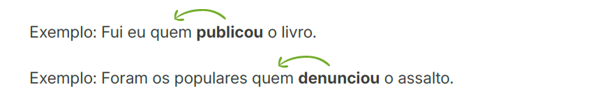
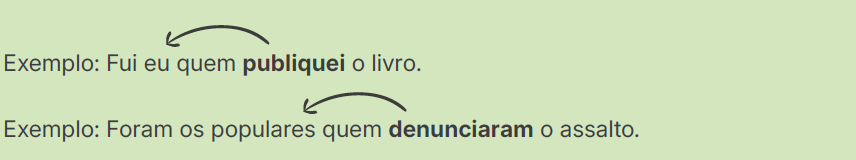
6 Sujeito formado pela expressão “um dos que”/“uma das que”
O verbo pode ficar tanto no singular quanto no plural.
Exemplo: O Incaper foi um dos que mais conduziu pesquisas sobre técnicas de cultivo sustentável.
Exemplo: O Incaper foi um dos que mais conduziram pesquisas sobre técnicas de cultivo sustentável.
7 Sujeito formado por um pronome interrogativo, demonstrativo ou indefinido no plural, seguido da expressão “de nós” (quais de nós, muitos de nós, alguns de nós etc.)
O verbo pode concordar tanto com a 3ª pessoa do plural quanto com o pronome pessoal.
Exemplo: Muitos de nós trabalham nesta pesquisa. (3ª pessoa do plural).
Exemplo: Muitos de nós trabalhamos nesta pesquisa. (pronome pessoal “nós”)
8 Sujeito formado por nomes que só existem no plural (Estados Unidos, Minas Gerais, Grandes Sertões Veredas etc.)
- Quando o sujeito não for acompanhado de artigo, o verbo fica no singular.
Exemplo: Minas Gerais faz divisa com o Espírito Santo.
Exemplo: Filipinas está localizada na região Sudeste da Ásia.
- Quando o sujeito for acompanhado de artigo, o verbo concorda com o artigo no singular ou no plural.
Exemplo: O Amazonas conta com a maior rede hidrográfica do país.
Exemplo: Os Estados Unidos se localizam na América do Norte.
- Em nome de obras, prefira usar o verbo no singular, mesmo que a obra esteja no plural e acompanhada de artigo.
Exemplo: Memórias Póstumas de Brás Cubas é uma grande obra da literatura brasileira.
Exemplo: Os Lusíadas narra a saga do povo português.
9 Sujeito formado por coletivo (cardume, povo, turma etc.)
O verbo concorda com o sujeito.
Exemplo: O povo saiu às ruas para manifestar indignação.
Exemplo: A turma de estudantes foi ao passeio técnico da escola.
Exemplo: A turma de estudantes foram ao passeio técnico da escola.
10 Sujeito formado por pronome de tratamento
Quando o sujeito é um pronome de tratamento Senhor(a), Vossa Excelência, Vossa Santidade etc.), o verbo fica na 3ª pessoa e acompanha o pronome, esteja ele no singular ou plural.
Exemplo: Vossa Excelência estará na reunião.
Exemplo: Vossas Excelências estarão na reunião.
Exemplo: Vossa excelência está equivocada. (alguém se referindo a uma deputada)
Exemplo: Vossa excelência está equivocado. (alguém se referindo a um deputado)
11 Palavra “se” indicando ação sofrida pelo sujeito
O verbo concorda com o sujeito paciente, ou seja, o sujeito que sofre a ação do verbo.
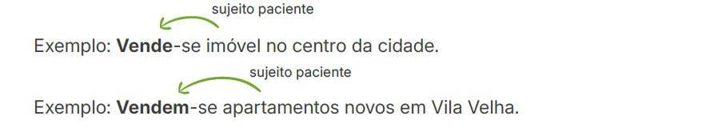
12 Palavra “se” indicando sujeito indeterminado
Quando o sujeito é indeterminado, ou seja, quando não se especifica quem está realizando a ação, o verbo fica sempre na 3ª pessoa do singular.
Exemplo: Precisa-se de trabalhadores para ajudar na colheita de café.
13 Verbos impessoais (haver, fazer)
Quando o é verbo impessoal, fica sempre na 3ª pessoa do singular.
- verbo haver no sentido de existir;
Exemplo: Havia plantações de tomate nesse terreno.
- verbo fazer no sentido de indicar tempo;
Exemplo: Faz dois meses que a palestra foi realizada.
- verbos que exprimem fenômenos meteorológicos ou da natureza (chover, amanhecer, anoitecer etc.).
Exemplo: Choveu todos os dias da semana.
- cancel Houveram muitas pessoas no evento ontem.
- cancel Fazem anos que não o vejo.
- cancel Choverão todos os dias do final de semana.
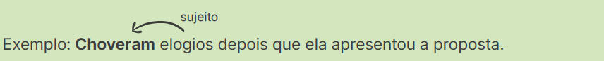
Sujeito composto
1 Sujeito depois do verbo (posposto)
Quando o sujeito composto aparece após o verbo, a concordância pode ser feita tanto no plural quanto com o núcleo do sujeito mais próximo.
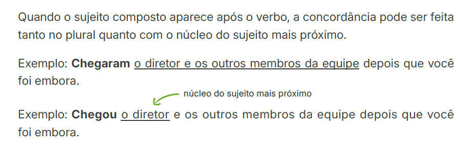
2 Sujeito formado por núcleos sinônimos ou quase sinônimos
Neste caso, a concordância pode ser feita tanto no singular quanto no plural.
Exemplo: Amor e carinho faz parte daquela casa.
Exemplo: Amor e carinho fazem parte daquela casa.
3 Os núcleos do sujeito constituem uma gradação de ideias
Quando os núcleos do sujeito formam uma sequência progressiva de palavras ou termos relacionados entre si, o verbo pode ficar no singular ou no plural.
Exemplo: Um segundo, uma hora, um dia não era o suficiente para eles.
Exemplo: Um segundo, uma hora, um dia não eram o suficiente para eles.
4 Os núcleos do sujeito são infinitivos
Quando o sujeito composto é formado por dois ou mais infinitivos, o verbo fica no singular.
Exemplo: Plantar e colher é atividade de rotina para o agricultor.
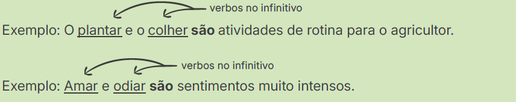
5 Componentes do sujeito resumidos por pronome indefinido (tudo, nada, ninguém)
Neste caso, o verbo fica no singular.
Exemplo: Ciúmes, desavenças, incompatibilidade de opiniões, tudo contribuiu para a separação do casal.
Exemplo: Conhecidos, amigos e parentes, ninguém acreditava na inocência do acusado.
6 Componentes do sujeito ligados por “ou”
- Quando os núcleos do sujeito apresentam exclusão, ou seja, a ação verbal é aplicada a apenas um deles, o verbo concorda com o núcleo do sujeito mais próximo.
Exemplo: Afonso Cláudio ou Brejetuba será selecionada para participar de novo projeto de pesquisa do Incaper. (será um ou outro - exclusão)
Exemplo: O pai ou os filhos ajudarão a mãe nas tarefas domésticas.
- Quando os núcleos apresentam retificação, ou seja, o objetivo de ajustar ou corrigir um dos elementos, o verbo concorda com o núcleo do sujeito mais próximo.
Exemplo: Café robusta ou conilon é uma variedade muito produzida no Brasil.
Exemplo: No caso de comprovação de plágio, o autor ou os autores serão inteiramente responsáveis por qualquer implicação legal.
- Quando o verbo se refere a todos os núcleos do sujeito, o verbo vai para o plural (neste caso “ou” tem o mesmo sentido de “e”).
Exemplo: Praia ou montanha oferecem muitas opções de lazer para turistas.
Exemplo: Dirigir alcoolizado ou sem cinto de segurança são infrações de trânsito.
7 Componentes do sujeito ligados por “nem”
Neste caso, o verbo fica preferencialmente no plural.
Exemplo: Nem Amanda nem Carlos gostaram da recepção dos anfitriões.
Exemplo: Não sobrou nem tempo nem dinheiro para conhecer o restante da cidade.
8 O sujeito é a expressão “um ou outro”
Neste caso, o verbo fica no singular.
Exemplo: Um ou outro convidado não aceitou o convite para participar da palestra.
9 O sujeito é formado pelas expressões “um e outro” ou “nem um nem outro”
Nestes dois casos, o verbo pode ficar tanto no singular quanto no plural.
Exemplo: Um e outro compareceu/compareceram à festa de inauguração.
Exemplo: Nem um nem outro estará/estarão livre(s) das acusações.
10 Os componentes do sujeito são ligados por “com”
- Quando a preposição “com” tiver valor de adição (= e), o verbo fica no plural.
Exemplo: O professor com a turma desenvolveram o projeto de dança.
- Quando a preposição “com” indicar companhia, o verbo concorda com o núcleo do sujeito. Neste caso, a intenção é enfatizar o primeiro elemento.
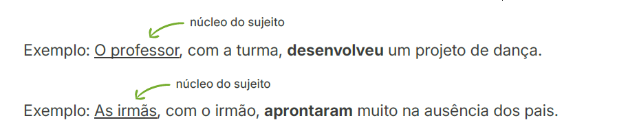
11 Componentes do sujeito ligados por conjunção comparativa (“tanto … quanto”, “assim como”, “bem como” etc.)
- Quando a intenção for expressar ideia de adição (= e) entre os componentes do sujeito, o verbo fica no plural.
Exemplo: Tanto a mãe quanto o pai estão acompanhando a educação escolar dos filhos.
- Quando houver relação de comparação entre os componentes do sujeito, o verbo ficará no singular.
Exemplo: O limão, assim como a laranja, é rico em vitamina C.
Concordância do verbo “ser”
Normalmente, a concordância ocorre entre o sujeito e o verbo. Porém, no caso do verbo “ser”, a concordância também pode ser feita entre o verbo e o predicativo do sujeito (termo que atribui uma característica ao sujeito) nas seguintes situações:
A Quando o sujeito for um desses pronomes: “isto”, “isso”, “aquilo”, “tudo” e “o”
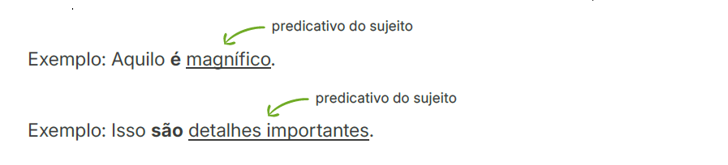
B Quando o sujeito estiver no singular e se referir a coisas, e o predicativo for um substantivo no plural
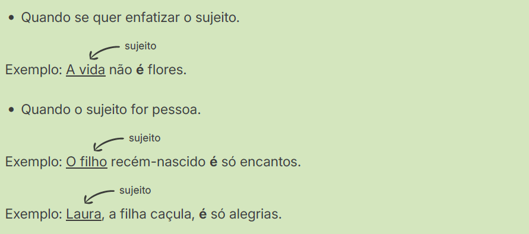
C Quando o sujeito for formado por expressões numéricas que exprimem quantidade, medida, preço etc.
Exemplo: Aproximadamente dois litros de água é a quantidade recomendada para um adulto consumir diariamente.
Exemplo: Dois metros de renda é o que falta para finalizar o vestido de formatura.
D Quando o sujeito for o pronome interrogativo “que” ou “quem”
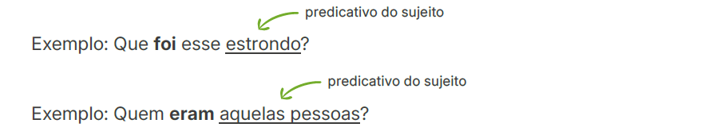
E Quando o predicativo do sujeito for um pronome pessoal reto
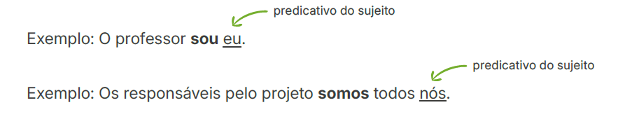
F Quando o sujeito for uma expressão de sentido coletivo ou partitivo
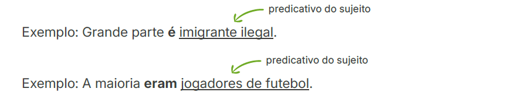
Exemplo: Quando ela chegou, já eram três da tarde.
Exemplo: De Vitória ao Rio são aproximadamente 500 quilômetros.
Exemplo: São necessários quatro anos para se formar no curso de Letras.
Exemplo: Hoje é (dia) 27 de setembro.
Exemplo: Hoje são 27 de setembro.
11.2.2 Tópicos de concordância nominal
A Como regra geral, artigos, pronomes, numerais e adjetivos devem concordar em gênero (feminino e masculino) e número (singular e plural) com o substantivo que acompanham
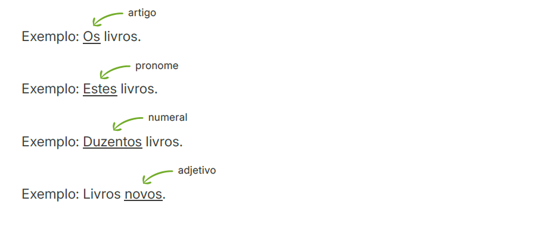
B Quando o adjetivo se refere a mais de um substantivo, há duas possibilidades:
- Se o adjetivo vier antes dos substantivos, ele concorda com o mais próximo.
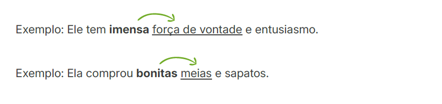
- Se o adjetivo vier depois dos substantivos, ele pode concordar com o mais próximo ou com todos eles. Neste último caso, o adjetivo fica no plural e havendo dois gêneros, prevalece o masculino.
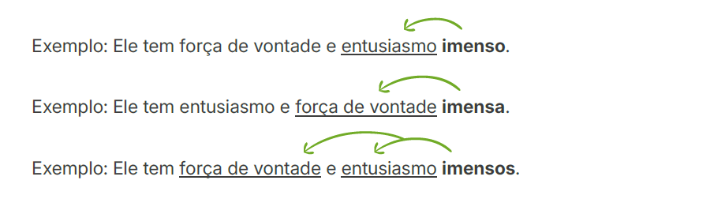
C Quando dois ou mais adjetivos se referem a apenas um substantivo, há duas possibilidades de concordância:
- O substantivo permanece no singular e é acrescentado artigo antes do último adjetivo.
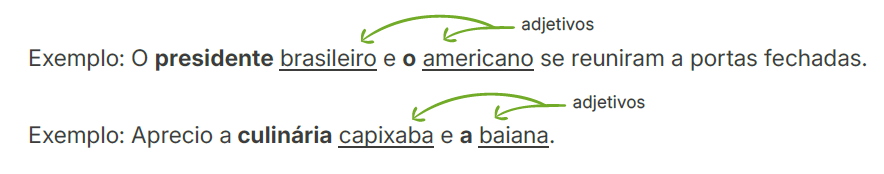
- O substantivo vai para o plural e o artigo antes do último adjetivo é omitido.
Exemplo: Os presidentes brasileiro e americano se reuniram a portas fechadas.
Exemplo: Aprecio as culinárias capixaba e baiana.
D É necessário/É preciso/É proibido/É bom/É permitido
- Essas expressões se mantêm invariáveis se o sujeito não estiver precedido de algum modificador (artigo, pronome, numeral etc.).
Exemplo: É proibido uso de celular durante a aula.
Exemplo: É preciso cautela ao manusear os equipamentos.
- Essas expressões concordam com o sujeito quando ele for precedido de algum modificador (artigo, pronome, numeral etc.).
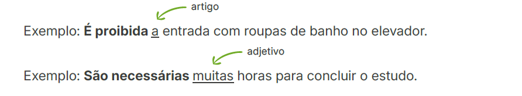
E Se dois ou mais numerais ordinais se referirem a um único substantivo, a concordância pode se apresentar das seguintes formas:
- O substantivo assume a forma no plural tanto antes quanto depois dos numerais.
Exemplo: O terceiro, quarto e quinto andares não foram atingidos pelo incêndio.
Exemplo: Os andares terceiro, quarto e quinto não foram atingidos pelo incêndio.
- O substantivo pode tanto assumir a forma no plural ou permanecer no singular quando vier depois dos numerais e estes forem precedidos de artigo.
Exemplo: O primeiro, o segundo e o terceiro lugares subiram ao pódio.
O primeiro, o segundo e o terceiro lugar subiram ao pódio.
Casos particulares
F Alerta/Menos
- São palavras invariáveis, ou seja, permanecem iguais, não sofrendo variações (gênero, plural etc.).
Exemplo: Os escoteiros devem estar sempre alerta.
Exemplo: Na última eleição, houve menos abstenções do que na anterior.
Exemplo: Quero menos comida porque não estou com muito apetite.
G Caro/Barato/Meio/Longe
- São palavras invariáveis quando funcionam como advérbios. Porém, quando atuam como adjetivos ou numerais, devem concordar com o substantivo a que se referem.
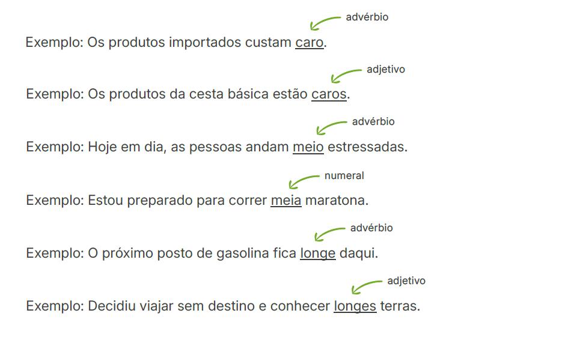
H O mais...possível/os mais...possíveis/o menos...possível
Neste caso, há as seguintes possibilidades:
- O mais/menos…possível como expressão fixa e invariável. No entanto, o adjetivo sempre concordará com o substantivo a que se refere em número (plural ou singular) e gênero (masculino ou feminino).
Exemplo: Gostaria de comprar verduras o mais frescas possível.
Exemplo: Sempre compro bananas o menos maduras possível.
Exemplo: Para sermos mais objetivos, devemos escrever um texto o mais conciso possível.
- Na expressão o mais/menos...possível, o adjetivo “possível” concorda com o artigo definido em número (singular ou plural) e gênero (masculino ou feminino).
Exemplo: Ele teve a atitude mais calma possível.
Exemplo: Tinha olhos os mais azuis possíveis.
Exemplo: Comprei roupas as menos caras possíveis.
- A expressão o mais/menos...possível permanece invariável quando a palavra intensificada é um advérbio.
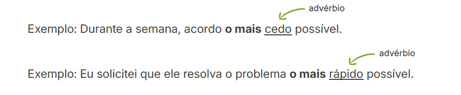
I Só/sós/a sós
- A palavra “só” quando funciona como adjetivo concorda em número (plural ou singular) com o sujeito a que se refere.
Exemplo: Durante a semana, fiquei em casa só. (sozinho)
Exemplo: Durante as férias, meus pais decidiram viajar sós. (sozinhos)
- Quando funciona como advérbio, a palavra “só” tem o significado de “somente, apenas”. Neste caso, ela é invariável.
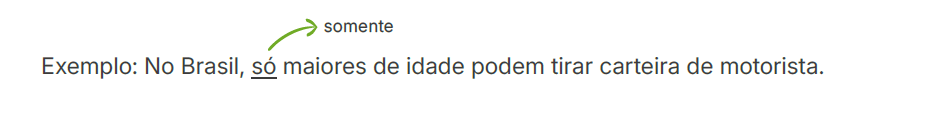
- A expressão “a sós” é invariável.
Exemplo: Eles ficaram a sós na sala.
11.2.3 Flexão do infinitivo
O infinitivo é impessoal quando não se refere a nenhum sujeito específico, ou seja, ele é genérico ou vago. Portanto, não é flexionado.
Exemplo: Estudar é um direito fundamental de todos.
O infinitivo é pessoal quando se refere a um sujeito e varia em número (singular ou plural) e pessoa (1ª, 2ª e 3ª).
O infinitivo será flexionado quando:
A O sujeito estiver claramente expresso e for diferente do sujeito da oração anterior
Exemplo: O anfitrião fez o possível para os hóspedes terem o melhor tratamento.
B O infinitivo vier antes do sujeito
Exemplo: Para resolverem a situação, eles decidiram conversar de forma amigável.
C O infinitivo estiver na voz passiva, for verbo reflexivo ou pronominal
Exemplo: Devido à insegurança naquela região da cidade, eles tinham receio de serem assaltados. (voz passiva)
Exemplo: Como estavam brigados, passavam pela rua sem se cumprimentarem. (verbo reflexivo)
Exemplo: Planejam fazer uma longa viagem depois de se aposentarem. (verbo pronominal)
A flexão do infinitivo é opcional quando:
A O infinitivo pessoal tiver sujeito igual ao sujeito da oração anterior
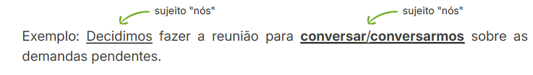
B O infinitivo pessoal vier precedido de uma preposição e funcionar como complemento de verbo
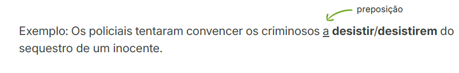
O infinitivo não será flexionado quando:
A Vier precedido de uma preposição e funcionar como complemento de substantivo ou adjetivo
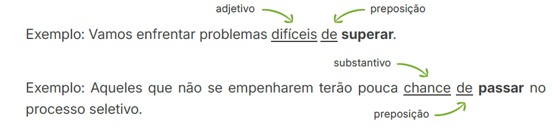
B O sujeito do infinitivo for um pronome oblíquo átono (me, o, os, a, as, lhe, nos etc.) acompanhado de um verbo auxiliar causativo (mandar, deixar, fazer etc.) ou sensitivo (sentir, ver, perceber, ouvir etc.)
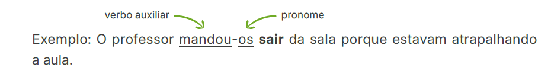
Exemplo: O professor mandou os alunos saírem da sala porque estavam atrapalhando a aula.
C For empregado em locuções verbais, ou seja, expressões constituídas de dois verbos: um auxiliar e outro principal
11.2.4 Hífen
- O hífen é usado em palavras compostas que designam espécies botânicas e zoológicas, estejam ou não ligadas por preposição ou qualquer outro elemento.
Exemplos:
| Pimenta-do-reino | Formiga-lava-pés |
| Batata-baroa | Broca-do-café |
| Banana-prata | Bicho-preguiça |
- Nomes de pragas devem ser grafados com hífen, tenham ou não elemento de ligação.
Exemplos:
| Ácaro-da-erinose | Ácaro-rajado |
| Cochonilha-da-roseta | Mosca-das-frutas |
| Mancha-foliar | Vassoura-de-bruxa |
- Nomes de doenças são grafados com hífen, exceto quando apresentarem elemento de ligação.
Exemplos:
| Mancha-aureolada | Murcha do cafeeiro |
| Mancha-aureolada | Mosaico do tomateiro |
| Sigatoka-negra | Mal de Alzheimer |
Exemplo: murcha de Sclerotium
Exemplos:
teia-das-folhas (praga/inseto)
teia das folhas (praga/doença)
- Usa-se hífen nas palavras cujo primeiro elemento é um prefixo terminado em vogal e o segundo elemento começa pela mesma vogal ou pela letra H. Se as vogais são diferentes, não se usa hífen.
Exemplos:
| Anti-inflacionário | Anti-higiênico | Antiaéreo |
| Micro-ondas | Co-herdeiro | Coautor |
| Semi-internato | Mini-hotel | Semiaberto |
Exemplos: coordenar, cooperar, cooperação, cooptar etc.
- Não se usa hífen nas palavras cujo primeiro elemento é um prefixo terminado em vogal e o segundo elemento começa por consoante. Quando a consoante é “R” ou “S”, ela deve ser dobrada.
Exemplos:
| Autopeça | Antirrugas |
| Seminovo | Microssistema |
| Ultramoderno | Autossustentabilidade |
Exemplos: pré-matrícula, pré-requisito, pró-reitoria de graduação, pró-cidadania, vice-governador etc.
- Usa-se hífen nas palavras cujo primeiro elemento é um prefixo terminado em consoante e o segundo elemento começa pela mesma consoante ou pela letra H. Se as consoantes são diferentes ou se o segundo elemento começa por vogal, não se usa hífen.
Exemplos:
| Inter-racial | Intermunicipal | Interestadual |
| Sub-base | Subsíndica | Subaquático |
| Super-homem | Supersônico | Superexigente |
- Com os prefixos “ex”, “sem”, “além”, “aquém”, “recém”, “pós”, “pré” e “pró”, usa-se sempre o hífen.
Exemplos:
| Além-mar | Recém-casado | Pró-europeu |
| Ex-aluno | Sem-terra | Além-túmulo |
| Pré-história | Pós-graduação | Aquém-mar |
- Usa-se hífen nos casos de palavras compostas, ou seja, quando ocorre a sequência substantivo + adjetivo ou adjetivo + substantivo, em que os dois termos passam a transmitir um novo conceito, configurando, assim, uma outra palavra, a palavra composta.
Exemplos:
Criado mudo ≠ Criado-mudo (mesa de cabeceira)
Mesa redonda ≠ Mesa-redonda (reunião, debate)
Amor perfeito ≠ Amor-perfeito (tipo de flor)
Ar condicionado ≠ Ar-condicionado (aparelho)
Salário mínimo ≠ Salário-mínimo (pessoa mal remunerada)
Exemplos: pontapé, madressilva, girassol, paraquedas e mandachuva.
- Usa-se hífen nos casos de palavras compostas por substantivo + substantivo. Tomam-se dois substantivos para formar um terceiro substantivo, com um novo conceito.
Exemplos:
| Homem-aranha | Auxílio-alimentação |
| Licença-prêmio | Férias-prêmio |
| Decreto-lei | Vale-refeição |
- Usa-se hífen nos adjetivos gentílicos, ou seja, aqueles que caracterizam as pessoas ou coisas de acordo com suas origens, considerando países, continentes, cidades, regiões, entre outros.
Exemplos:
Espírito Santo → espírito-santense
África do Sul → sul-africano
América do Sul → sul-americano
Porto Alegre → porto-alegrense
Inglês e Americano → anglo-americano
Italiano e brasileiro → ítalo-brasileiro
Exemplos: euromercado, afrodescendente, lusocultura, hispanofalante, latinofobia etc.
- Não se usa hífen nas locuções (expressões formadas a partir da união de duas ou mais palavras).
Exemplos:
| Cão de guarda | Corpo a corpo |
| Dia a dia | Pé de moleque |
| Mão de obra | Pão de ló |
Exemplos: água-de-colônia, arco-da-velha, pé-de-meia, mais-que-perfeito, cor-de-rosa, à queima-roupa, ao deus-dará.
- Usa-se o hífen nos encadeamentos vocabulares (associação ocasional de palavras, por exemplo, quando se refere a uma relação entre duas ou mais entidades).
Exemplos:
| Ponte Rio-Niterói |
| Trajeto Tóquio-São Paulo |
| Eixo Rio-São Paulo |
11.2.5 Uso adequado do Gerúndio
O gerúndio, assim como o infinitivo e o particípio, é chamado de forma nominal do verbo porque não apresenta flexão de tempo e modo.
O gerúndio é comumente usado para expressar uma ação que está em andamento.
Exemplo: Estou trabalhando agora.
Além disso, essa forma nominal do verbo pode ser usada adequadamente para expressar:
A Causa
Exemplo: Considerando-se culpado, não teve outra alternativa a não ser confessar.
B Modo
Exemplo: Chorando muito, resolveu contar toda a verdade.
C Condição
Exemplo: Economizando, será possível quitar a dívida que contraímos.
D Concessão
Exemplo: Chovendo, não desistiram de sair de casa mesmo sem guarda-chuva.
No entanto, quando o gerúndio é usado de forma excessiva ou indevida, por exemplo, para expressar ideia de futuro em andamento, é chamado de gerundismo. Esse uso é gramaticalmente considerado um desvio e deve ser evitado!
check_circle Vou enviar o e-mail em breve.
cancel Vou estar enviando o e-mail em breve.
check_circle Em que posso ajudar?
cancel Em que posso estar ajudando?
Exemplo: Não me ligue depois das 23h, pois estarei dormindo.
- check_circle Ele entrou no ônibus e sentou-se no banco de trás.
- cancel Ele entrou no ônibus sentando no banco de trás. (uso inadequado)
- check_circle O produtor fez a poda com um facão, limpou e organizou todo o resto de ramos depositados no chão de trás.
- cancel O produtor fez a poda usando um facão, limpando e organizando todo o resto de ramos depositados no chão de trás. (repetição excessiva)
11.2.6 Vocabulário e dúvidas frequentes
A base de x À base de
- A expressão a base de, sem acento indicativo de crase, deve ser utilizada para indicar a parte inferior de algo, o que serve de sustentação ou a parte principal, o fundamento.
Exemplo: No Brasil, a base das plantações e renovações de lavoura de café conilon e robusta é formada por 15 cultivares.
- Já a expressão à base de, com acento indicativo de crase, deve ser utilizada para indicar a principal matéria-prima ou a origem de algo.
Exemplo: O avanço do processo de industrialização tem impulsionado o desenvolvimento de novos produtos à base de café.
Abaixo x A baixo
- A palavra abaixo, escrita junta, significa “em posição inferior”, “em lugar menos elevado”, “embaixo”.
Exemplo: A temperatura ontem chegou a zero, mas hoje está abaixo.
Também expressa “condenação”, “protesto”, “reprovação”.
Exemplo: Abaixo a discriminação e o racismo!
- Já a expressão a baixo, escrita separada, é utilizada para estabelecer relação com as expressões “de cima” e “de alto”.
Exemplo: Ele olhou o prédio de alto a baixo e decidiu entrar.
A cerca de, Acerca de, Há cerca de ou Cerca de
- A cerca de é o mesmo que “a uma distância aproximada de”.
Exemplo: Estávamos a cerca de dois minutos do meu trabalho.
- Acerca de significa “a respeito de”, “sobre”.
Exemplo: Nada disse acerca de seus planos.
- Há cerca de indica tempo decorrido, significa “faz aproximadamente”.
Exemplo: Compraram aquela casa há cerca de dois meses.
Também pode indicar “existência”.
Exemplo: Naquele colégio há cerca de 200 estudantes.
- Cerca de indica quantidade.
Exemplo: Cerca de 30 condôminos compareceram à assembleia extraordinária.
A fim x Afim
- A fim (separado) é utilizado para indicar “propósito”, “intenção”, “finalidade”.
Exemplo: Eles estudaram até nos feriados a fim de passar no concurso.
- Afim (tudo junto – adjetivo) significa “semelhante”, “similar”, “conforme”, “próximo”.
Exemplo: Sempre nos demos muito bem. Afinal, temos muitos objetivos afins.
- Afim (substantivo) significa “parente por afinidade”, “adepto”, “aliado”.
Exemplo: Para a cerimônia de casamento, os noivos convidaram amigos, parentes e afins.
Ambas as, Ambos os, Ambas ou Ambos
- As formas ambas as e ambos os são utilizadas antes de substantivos.
Exemplo: Ambas as sugestões foram acatadas.
Exemplo: Ambos os cenários apontam para o aumento da inflação.
- Porém, as formas ambas e ambos (sem os artigos “as” e “os”) são utilizadas quando não estiverem acompanhadas de substantivos.
Exemplo: Há duas técnicas recomendadas. Ambas são utilizadas com frequência.
Exemplo: São irmãos gêmeos. Frequentemente ambos são confundidos.
À medida que x Na medida em que
As expressões parecem sinônimas, mas não são.
- À medida que indica “à proporção que”.
Exemplo: No cadastro de reserva, o candidato é nomeado à medida que os servidores se aposentam ou se desligam do órgão.
- Na medida em que expressa causa, no sentido de “uma vez que” ou “visto que”.
Exemplo: O convênio representa relevante avanço, na medida em que representa importante ferramenta para melhorar a qualidade do serviço prestado.
Anexo x Em anexo
- Anexo
Essa palavra varia em gênero (feminino/masculino) e número (singular/plural).
Exemplo: Seguem anexos os documentos.
Exemplo: Envio anexas as fotos solicitadas.
- Em Anexo
Essa expressão não varia em gênero (feminino/masculino) ou número (singular/plural).
Exemplo: Em anexo, segue o arquivo solicitado.
Exemplo: Envio os documentos em anexo.
A nível de x Em nível de
- A nível de
Embora seja usado de forma ampla e muitas vezes equivocada, o termo “a nível de” deve ficar restrito ao sentido de nivelamento.
Exemplo: As pesquisas devem ser realizadas a um nível de rigor científico que garanta a credibilidade e a integridade dos resultados.
- Em nível de
Esse termo é usado quando se pretende dizer “com relação a”, “no que se refere a”, “em termos de” ou ainda “âmbito”, “instância”.
Exemplo: O Incaper atua com pesquisa, assistência técnica e extensão rural em nível estadual.
Ao encontro de x De encontro a
- Ao encontro de significa “favorável a”, “estar de acordo com”, “atender”.
Exemplo: As sugestões foram aceitas porque elas vão ao encontro dos objetivos do nosso projeto.
- De encontro a indica “estar contra”, “em oposição a”.
Exemplo: As sugestões foram rejeitadas porque elas vão de encontro aos objetivos do nosso projeto.
Aonde x Onde
- Aonde significa “para onde”, “para que lugar”, “para o lugar que”, expressa ideia de destino ou movimento.
Exemplo: Aonde você vai nas próximas férias?
- Onde expressa ideia de lugar fixo.
Exemplo: Onde há fumaça, há fogo!
Ao invés de x Em vez de
- Ao invés de quer dizer “ao contrário de”, “o oposto de”.
Exemplo: Ao invés de sair correndo, ficou parada.
Exemplo: Ao invés de subir, o elevador desceu.
- Em vez de indica “no lugar de”.
Exemplo: Em vez de ir ao teatro, fui ao cinema com minha prima.
A princípio x Em princípio
- A princípio quer dizer “à primeira vista”, “inicialmente”, “primeiramente”.
Exemplo: A princípio, eu estava nervoso, mas me acalmei no decorrer da entrevista!
- Em princípio significa “em tese”, “teoricamente”, “de modo geral”.
Exemplo: Em princípio, todos são iguais perante a lei.
Bastante
- Usado como adjetivo, ele varia em número, ou seja, pode ficar no singular ou no plural. Uma dica é substituir por “muito”. Se o termo variar para o plural, “bastante” acompanha essa variação.
Exemplo:
Vimos muitas variações de preços no mercado.
Vimos bastantes variações de preços no mercado.
- Também pode ser usado como advérbio. Nesse caso, não varia.
Exemplo:
As experiências têm sido muito positivas.
As experiências têm sido bastante positivas.
Benfeito, Bem-feito ou Bem feito
- Benfeito: Benfeitoria, benefício.
Exemplo: O benfeito deixado por Roberto Freire para a educação é inestimável.
- Bem-feito: caprichado, feito com esmero, bem-acabado.
Exemplo: A toalha de mesa era ricamente decorada com um bordado muito bem-feito.
- Bem feito: merecido (interjeição).
Exemplo: Foi impedido de entrar em sala de aula. Bem feito! Vive chegando atrasado.
- Bem feito: bem + particípio passado do verbo fazer (feito).
Exemplo: O serviço de colocação dos azulejos foi muito bem feito pelo pedreiro.
Caso x Se acaso
- Caso indica condição, mas dispensa a conjunção “se”.
Exemplo: Caso chova, não iremos à praia!
- Acaso também indica condição, porém precisa da conjunção “se”.
Exemplo: Se acaso chegar atrasado, perderá o voo!
Contribuir
- Contribuir com sentido de “cooperar para atingir determinado objetivo” requer o uso da preposição “para”.
Exemplo: “O trabalho contribui tanto para o desenvolvimento do indivíduo como da sociedade”.
- Contribuir com sentido de “pagar contribuição” ou “oferecer auxílio material ou financeiro” requer o uso da preposição “com”.
Exemplo: “As empresas deverão contribuir com um percentual de seus lucros”.
Corroborar
- Quando empregado como transitivo direto, o verbo “corroborar” não é acompanhado de preposição.
Exemplo: As provas corroboraram o veredito.
- Quando empregado como transitivo direto e indireto, o verbo “corroborar” é acompanhado de preposição.
Exemplo: O pesquisador corroborou os resultados de seu estudo com evidências científicas.
Dado, Dada, Dados ou Dadas
- São formas do particípio do verbo “dar”. Portanto, há concordância de gênero e número com o substantivo a que se referem! Equivalem a “por causa de”, “devido a”.
Exemplo: Dado o índice de inflação, os salários serão reajustados.
Exemplo: Dados os últimos acontecimentos, medidas legais serão tomadas.
Exemplo: Dada a impaciência do motorista, o acidente de trânsito foi inevitável.
Exemplo: Dadas as evidências, a polícia iniciará as investigações imediatamente.
Demais x De mais
- A palavra demais (tudo junto) transmite, principalmente, a ideia de intensidade.
Exemplo: Você se preocupa demais com as coisas. Relaxe!
- Já a palavra de mais (forma separada) transmite, principalmente, a ideia de quantidade.
Exemplo: Você fez comida de mais para o almoço. Vai sobrar para o jantar!
Despercebido x Desapercebido
- Despercebido = algo ou alguém que não foi visto, notado, não chamou atenção. Também tem o sentido de distraído.
Exemplo: Era tão discreto, que passava totalmente despercebido na sala de aula.
Exemplo: Ela vive no mundo da lua. Anda por aí despercebida.
- Desapercebido = alguém desprevenido, que não está preparado.
Exemplo: Desapercebido, o aposentado foi assaltado na saída do banco.
Exemplo: O professor me pegou desapercebido, e eu não soube responder à pergunta.
Entre x Dentre
- Dentre: “de” + “entre” e significa “do meio de”. Deve ser usado quando há ocorrência de verbos que “pedem” a preposição “de”, como “sair”, “ressurgir”, “surgir”, “tirar”, “retirar” etc.
Exemplo: Surgiu inesperadamente dentre a multidão.
Exemplo: Retirou o número premiado dentre tantos outros.
- Entre quer dizer: “no meio de”, “em meio a”, “cerca de”, entre outros significados. Deve ser usado quando não há a presença da preposição “de”.
Exemplo: Entre os chefes de Estado, estava o primeiro-ministro canadense.
Exemplo: O Natal é a minha data festiva predileta entre tantas outras.
Este(s), Esta(s), Esse(s) ou Essa(s)
- Em relação ao espaço físico
Os pronomes este(s) e esta(s) são usados para indicar que algo ou alguém está perto de quem fala.
Exemplo: Este capítulo apresenta as Boas Práticas Agrícolas (BPA). (O capítulo que está sendo apresentado.)
Já esse(s) e essa(s) são usados para indicar que algo ou alguém está longe do emissor (quem fala) e mais próximo do receptor (com quem se fala).
Exemplo: Essa é a sua opinião? (A opinião da pessoa com quem falo).
- Em relação ao tempo
Este(s) e esta(s) são usados para indicar o momento presente.
Exemplo: Esta Páscoa terá mais confraternização do que a do ano passado.
Esse(s) e essa(s) são usados para indicar passado ou futuro.
Exemplo: Em março fez muito calor. Esse mês foi muito quente. (Março já terminou)
- Em relação ao discurso (texto)
Este(s) e esta(s) são usados quando alguém ou algo vai ser mencionado no texto.
Exemplo: A palavra de ordem é esta: transparência.
Esse(s) e essa(s) são usados em referência a algo que já foi mencionado no texto.
Exemplo: Manter o café longe de outros produtos: esse é um cuidado a ser tomado no armazenamento.
Etc.
O termo significa “e outras coisas” ou “assim por diante”, indicando a ideia de acréscimo ou continuidade. Por essa razão, é desnecessário o uso do conectivo “e” antes da palavra.
Vale ainda destacar:
Sempre haverá ponto ao final da palavra, mesmo que ela ocorra no meio do texto. No entanto, outras pontuações posteriores podem ser usadas. A exceção é a reticência, que não deve ser usada, pois configura redundância de sentido.
Exemplo: As atividades mecanizadas, como preparo de solo, pulverização, adubação etc. são essenciais para a produtividade agrícola.
Exemplo: Adquirimos maçã, laranja, uva etc., além de investirmos em hortaliças para diversificar a oferta de produtos.
Se aparecer ao final da frase, apenas um ponto é suficiente.
Exemplo: É necessário aumentar os investimentos para solucionar problemas na cadeia produtiva, seja manejo cultural, fitossanitário, pós-colheita etc.
Face a x Em face de
Embora a expressão "face a" seja utilizada no dia a dia, ela não existe formalmente na língua portuguesa e, portanto, deve ser evitada. Na realidade, a forma adequada é em face de, cujo significado é “devido a” ou “em frente de/a”.
check_circle Em face dos acontecimentos relatados, tomaremos providências.
cancel Face aos acontecimentos relatados, tomaremos providências.
Frente a
O uso dessa expressão não é adequado de acordo com a norma-padrão! Melhor usar “diante de”, “ante”, “em meio a”, “considerando-se”.
check_circle Diante das/Ante as/Em meio às dificuldades encontradas, ela desistiu de tentar mais uma vez.
cancel Frente às dificuldades encontradas, ela desistiu de tentar mais uma vez.
Haja vista
Utilize sempre a expressão haja vista (no feminino) no sentido de “tendo em vista”, “porque”, “devido a”. Não existe a expressão “haja visto”.
Exemplo: O diagnóstico precoce do câncer de próstata é decisivo, haja vista que aumenta as chances de cura e diminui os efeitos colaterais.
Houveram x Houve
O verbo “haver” com o sentido de existir é impessoal e, por isso, é conjugado apenas na 3ª pessoa do singular! Assim, a forma “houveram” está incorreta.
check_circle Houve vários problemas durante o evento esportivo.
cancel Houveram vários problemas durante o evento esportivo.
Implicar
- Implicar com sentido de “acarretar”, “exigir”, “demandar” e “requerer” não tem complemento introduzido pela preposição “em”.
Exemplo: Dirigir na chuva implica atenção redobrada.
- Implicar com sentido de “envolver” alguém em alguma complicação tem complemento introduzido pela preposição “em”.
Exemplo: Ele implicou seu melhor amigo em uma tremenda confusão.
Junto a
Tem sentido de “ao lado de”. Caso contrário, a expressão deve ser substituída por preposições, como “de”, “no”, “com”, “ao”, “para”, conforme o contexto.
check_circle O advogado de defesa entrou com recurso no STF.
cancel O advogado de defesa entrou com recurso junto ao STF.
check_circle Finalmente conseguimos apoio da equipe.
cancel Finalmente conseguimos apoio junto à equipe.
check_circle A instituição desenvolve um trabalho excelente com os agricultores.
check_circle A instituição desenvolve um trabalho excelente em prol dos agricultores.
cancel A instituição desenvolve um trabalho excelente junto aos agricultores.
Mesmo
O termo mesmo e suas variações (mesma/ mesmos/ mesmas) podem ser utilizados como:
a) Adjetivo (equivalente a "igual", "idêntico"; pode ter singular, plural, masculino, feminino).
Exemplo: Os adolescentes em geral usam o mesmo vocabulário e as mesmas gírias em suas conversas.
b) Pronome demonstrativo (equivalente a “próprio”; também pode ter singular, plural, masculino, feminino).
Exemplo: Ela mesma trocou a lâmpada.
Exemplo: Elas mesmas trocaram a lâmpada.
c) Pronome demonstrativo (equivale a “isso”, “aquilo”, “aquele”, “aquela”; também pode ter singular, plural, masculino e feminino).
Exemplo: Dona Sebastiana ajuda muito as pessoas e espera que seus filhos façam o mesmo.
Exemplo: Essa ave é a mesma que estava com a asa quebrada.
Exemplo: Essas reivindicações são as mesmas apresentadas na última greve.
d) Conjunção (equivale a “ainda que”, “embora”).
Exemplo: Mesmo doente, continuou trabalhando.
- check_circle O formulário é obrigatório para o cadastro. Verifique se ele foi anexado corretamente.
- cancel O formulário é obrigatório para o cadastro. Verifique se o mesmo foi anexado corretamente.
Onde x Em que
As expressões onde e em que são utilizadas quando há referência a lugar; ao espaço físico.
Exemplo: O bairro onde moro tem um comércio muito bom.
Exemplo: Este é o cruzamento em que ocorrem muitos acidentes de trânsito.
No entanto, quando não há referência ao espaço físico, apenas o termo em que deve ser utilizado.
check_circle A situação em que nos encontramos é crítica!
cancel A situação onde nos encontramos é crítica!
check_circle Os casos em que houver dúvidas serão reavaliados!
cancel Os casos onde houver dúvidas serão reavaliados!
Exemplo: A situação na qual nos encontramos é crítica!
Exemplo: Os casos nos quais houver dúvidas serão reavaliados!
Por que, Por quê, Porque e Porquê
a) Por que (separado) é utilizado nas perguntas (diretas e indiretas) ou quando tiver o mesmo sentido que “razão”, “motivo”.
Exemplo: Mesmo doente, continuou trabalhando.
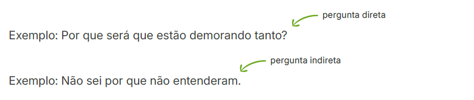
b) Por quê (separado e com acento) é utilizado no final de frases.
Exemplo: Estão brigando? Por quê?
c) Porque (junto) é empregado quando corresponde a uma explicação ou a uma causa. É equivalente a “pois”, “uma vez que”, “já que”. Costuma ser utilizado em respostas.
Exemplo: Escolhemos este material porque é mais barato.
d) Porquê (junto e acentuado) representa um substantivo que significa “causa”, “razão” e “motivo”.
Exemplo: Não sei o porquê dessa indecisão.
Possuir
O verbo possuir indica “ser dono de algo”, “ter a posse de algo”.
Exemplo: Os herdeiros possuem imóveis que foram deixados pelo pai.
Assim, se esse não for o sentido desejado, cabe substituir o termo por outras opções equivalentes, como “ter”, “dispor”, “apresentar”, “conter”, entre outros.
check_circle O condomínio tem várias comodidades de lazer, como piscina, quadra de esportes, salão de festa e sauna.
check_circle O condomínio dispõe de várias comodidades de lazer, como piscina, quadra de esportes, salão de festa e sauna.
cancel O condomínio possui várias comodidades de lazer, como piscina, quadra de esportes, salão de festa, sauna etc.
Tampouco x Tão pouco
- Tampouco significa “também não”, “nem”, “muito menos”.
Exemplo: A decisão tomada não é correta e tampouco justa!
- Tão pouco significa “muito pouco”, “pouca coisa”.
Exemplo: Tivemos tão pouco tempo, que não foi possível discutir todos os assuntos!
Todo o x Todo
- A expressão todo o indica a totalidade.
Exemplo: A medida será aplicada em todo o país.
- A palavra todo indica “cada”, “qualquer”.
Exemplo: A medida será aplicada em todo país.
Sessão, Seção e Cessão
Essas palavras são homófonas, ou seja, possuem a mesma fonética embora apresentem grafias e sentidos diferentes. Talvez por isso causem tanta confusão no dia a dia.
- Sessão significa “tempo durante o qual se realiza uma atividade ou intervalo de tempo em que algo acontece”: sessão de cinema, sessão de fotos, sessão de terapia, sessão plenária etc.
Exemplo: Só conseguimos ingressos para assistir ao filme na sessão das oito.
- Seção quer dizer “divisão de um todo”: seção eleitoral, seção infantil (em uma loja) etc.
Exemplo: A seção de roupas femininas fica no segundo andar da loja.
- Cessão significa “ato ou efeito de ceder algo a alguém”: cessão de bens, cessão de direitos, cessão de herança etc.
Exemplo: Foi autorizada a cessão dos bens do falecido aos herdeiros legais.
Vir x Vier
- Vir é a forma conjugada do verbo “ver” (olhar, enxergar) na 1ª ou 3ª pessoa do singular do presente do subjuntivo.
Exemplo: Se você a vir, diga a ela que mandei um abraço.
Exemplo: Quando ele vir o que aconteceu, vai ficar muito bravo!
- Vier é a forma conjugada do verbo “vir” (sair de um lugar e chegar a outro) na 1ª ou 3ª pessoa do singular do presente do subjuntivo.
Exemplo: Se ela vier a pé, vai chegar atrasada de novo.
Exemplo: Quando ele vier aqui, eu darei o recado.